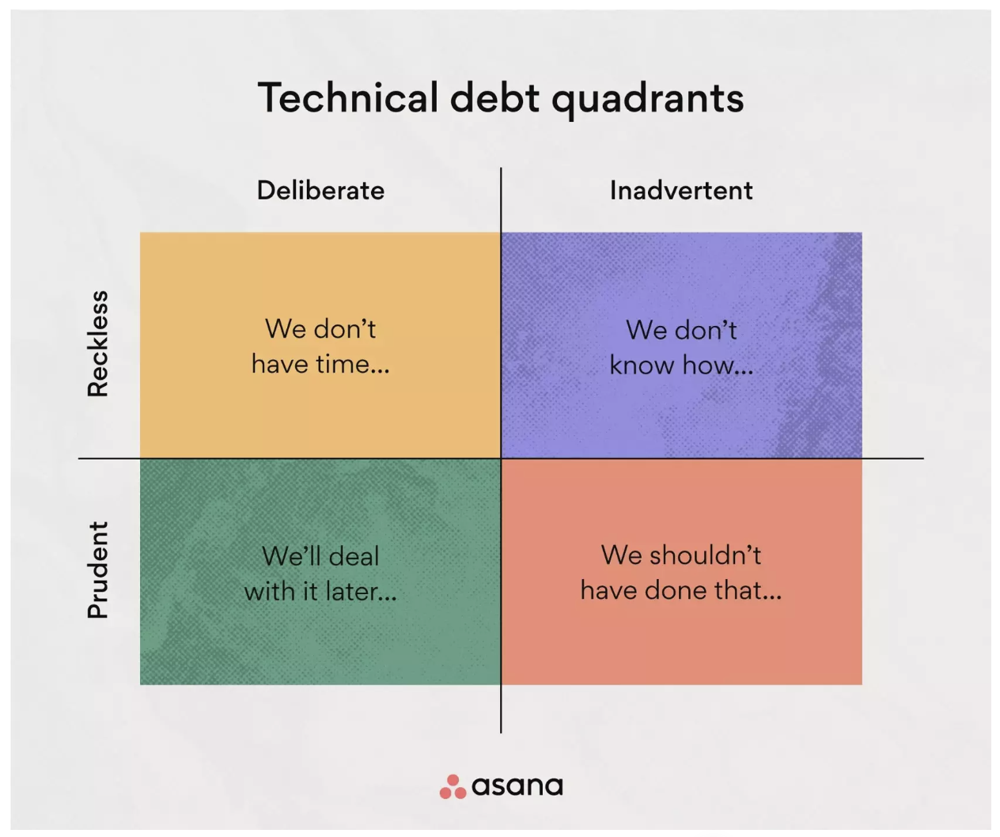

Tech debt isn’t all bad.
Tech debt is the flip side of project health
Technical debt is generally defined as the accrued cost of using less than optimal solutions now, that you will have to ‘pay’ for later.
Just as mortgages and school loans and other types of investments are not always bad (but might still feel that way), not all kinds of tech debt are bad. In fact, for discussions like these, its probably best we frame tech debt as the inverse of ‘project health’.
It’s unrealistic to write a perfect project. And even if you did, the software environment surrounding that perfect project would still change and eventually render that perfect project into no longer useful. So how do we conduct ourselves in the real world where ‘good code’ is only one piece of the puzzle?
Types of tech debt
Not all types of tech debt are the same. Just as thousands of dollars in credit card debt for my Hidden Valley ranch habit should not be equated to me storing money away for my child’s education fund. One of these is a good use of money (I’ll let you guess which).
Tech debt has been categorized by others (like this article from asana) as being of different types:
 From this article:
` Prudent and deliberate: The decision to ship quickly and deal with the consequences later causes prudent and deliberate debt. This type of debt is most commonly used when the stakes of the product are relatively low, and the benefits of a quick delivery outweigh the risk.
Reckless and deliberate: Knowing how to produce the best code but prioritizing speedy delivery over it is the cause of reckless and deliberate debt.
Prudent and inadvertent: Prudent and inadvertent debt happens when there’s a desire to produce the best code, but you find a better solution after implementation.
Reckless and inadvertent: Reckless and inadvertent debt occurs when a team tries to produce the best code without the necessary knowledge to do so. The team is often unaware of the mistakes they’re making. `
So sometimes tech debt has its place. Prudent and deliberate can help you reach a deadline in scenarios where the stakes are low. But what about the other kinds of tech debt? Ideally we’d like to minimize those, and that relates to how supportive a development environment is.
Context, context, context
I have a core belief that people, in general, act accordingly to their context as opposed to intrinsic ‘goodness’ or ‘badness’. In other words most people aren’t ‘bad apples’ but even the ‘best apples’ will become inedible if you put them in a bowl of worms.
This applies very much to the workplace. Most people do the best work they can given the context. But some contexts are more supportive and conducive to good work than others. In my own work history, there are some contexts in which I felt I was very well supported and did great work given my skills at the time, and on the flip side, there were other contexts in which I felt my work was not as good as it could have been, not because I didn’t care (I cared just as much then as I do know), but that I just didn’t have the support or resources to do the work to the same quality it could have been.
In other words, I think data scientists, developers, and other “professional” folks make mistakes when they think that empathy isn’t an essential and valuable tool in the workplace. So how do we channel this empathy into creating a supportive work environment?
Supportive work environments for minimizing less than ideal kinds of tech debt
To optimize a project’s health we need to 1) Understand the goal of the project 2) Be able to implement the project and 3) Have time to do said implementation
- Understand the goal of the project
- Proper understanding of the problem – doing groundwork.
- Communicating and listening to the end user
- Be able to implement the project
- Support for training opportunities! Investing in young folks!
- Code review!
- Written knowledge/documentation
- Outsource to more knowledgeable people when you can!
- Have time to implement the said solutions
- Upfront costs can mean long term gains
- Do not take on more dishes than you can cook! – you are going to burn yourself or a dish.
If you are in an environment that can’t give you these things, look into leaving to go to a place that can support you to do your best work!
It always comes back to people
I think at the end of the day, I’m realizing nearly every common work problem seems to root itself in systemic and organizational issues where people and their humanity are depriortized. If we can continually work to support people and their work I think issues of bad types of tech debt, irreproducible research, and other common work issues in data science would improve.
R version 4.3.1 (2023-06-16)
Platform: x86_64-apple-darwin20 (64-bit)
Running under: macOS Ventura 13.5.2
Matrix products: default
BLAS: /Library/Frameworks/R.framework/Versions/4.3-x86_64/Resources/lib/libRblas.0.dylib
LAPACK: /Library/Frameworks/R.framework/Versions/4.3-x86_64/Resources/lib/libRlapack.dylib; LAPACK version 3.11.0
locale:
[1] en_US.UTF-8/en_US.UTF-8/en_US.UTF-8/C/en_US.UTF-8/en_US.UTF-8
time zone: America/New_York
tzcode source: internal
attached base packages:
[1] stats graphics grDevices utils datasets methods base
loaded via a namespace (and not attached):
[1] vctrs_0.6.5 httr_1.4.7 cli_3.6.2 knitr_1.45
[5] rlang_1.1.2 xfun_0.41 jsonlite_1.8.8 glue_1.6.2
[9] openssl_2.1.1 askpass_1.2.0 htmltools_0.5.7 hms_1.1.3
[13] fansi_1.0.6 rmarkdown_2.25 evaluate_0.23 tibble_3.2.1
[17] tzdb_0.4.0 fastmap_1.1.1 yaml_2.3.8 lifecycle_1.0.4
[21] compiler_4.3.1 ottrpal_1.2 fs_1.6.3 htmlwidgets_1.6.2
[25] pkgconfig_2.0.3 rstudioapi_0.15.0 digest_0.6.33 R6_2.5.1
[29] utf8_1.2.4 readr_2.1.4 pillar_1.9.0 magrittr_2.0.3
[33] tools_4.3.1 xml2_1.3.6